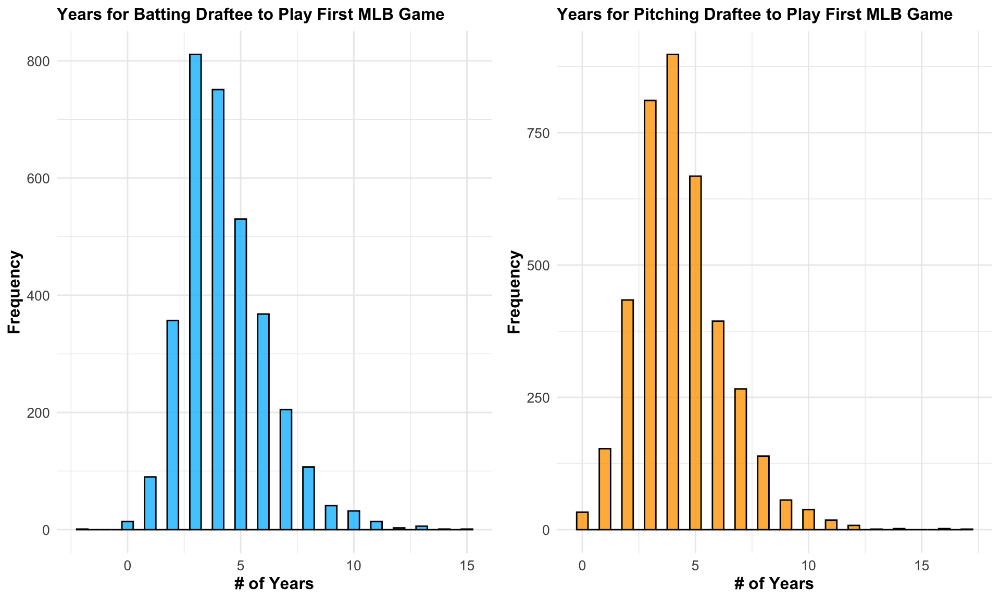
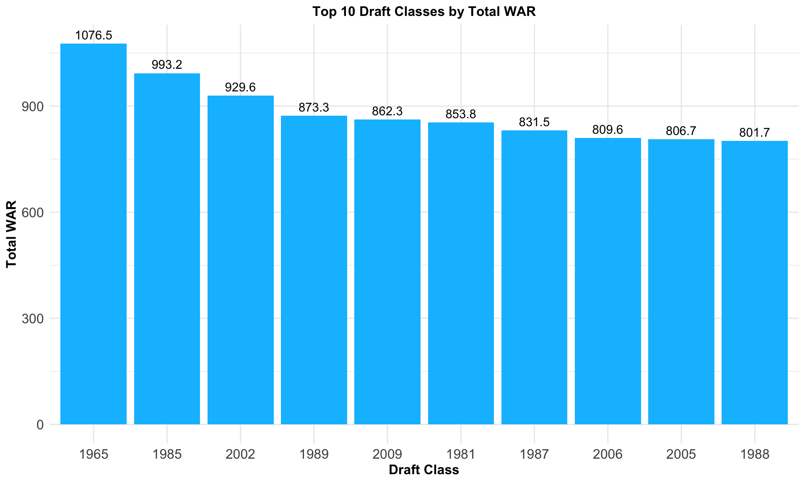

3.1 What Is the Relationship Between a Draftee’s Draft Round and Their School Level Status?
We made a stacked bar chart that displayed the percentage of draftees by round, with colors indicating high school status at the time of drafting, in order to examine the relationship between draft round and high school status. This stacked bar chart analysis shows that a much less number of high school athletes are selected as the first ten rounds go.
Code
library(tidyverse)library(data.table)draft_info <-fread('data/cleaned/clean_draft.csv')draft_info <- draft_info |>mutate(mlb_years =ifelse(mlb_played_first ==0& mlb_played_last ==0, 0, (mlb_played_last - mlb_played_first) +1 ) )# Create a dataframe with state naming datastate_data <-data.frame(names = state.name, abbreviation =tolower(state.abb))draft_info <- draft_info |>left_join(state_data, by =c("home_state"="abbreviation")) |>select(-home_state) |>rename(home_state = names) |>drop_na(home_state)players_per_round <- draft_info |>filter(as.integer(pick_round) %in%c(1:10)) |>drop_na(high_school) |>group_by(pick_round) |>summarise(drafted_players =n()) |>ungroup() |>mutate(pick_round =factor(pick_round, levels =c(1:10))) |>arrange(pick_round)# Subset the data to only players drafted in the first 10 roundsfirst_10 <- draft_info |>filter(as.integer(pick_round) %in%c(1:10)) |>drop_na(high_school) |>group_by(pick_round, high_school) |>summarise(num_players =n()) |>arrange(desc(num_players)) |>ungroup() |>inner_join(players_per_round, by ="pick_round") |>mutate(pick_round =factor(pick_round, levels =c(1:10)),high_school =as.factor(ifelse(high_school =="Yes", "High School", "College") ),percent =round(num_players / drafted_players *100, 2) )|>arrange(pick_round)hs_by_round_plot <-ggplot(first_10, aes(x = pick_round, y = percent, fill = high_school)) +geom_bar(stat ="identity", position ="stack") +labs(y ="Percent of Draftees", x ="Draft Round", title ="Percent of Draftees by Round and School Level",fill ="School Level") +theme_minimal() +geom_text(aes(label =paste(percent, "%", sep ="")), position =position_stack(vjust =0.5), size =4) +theme(plot.title =element_text(size =12, face ="bold"),axis.title =element_text(size =12, face ="bold"),axis.text =element_text(size =10),legend.title =element_text(size =10, face ="bold"),legend.text =element_text(size =10))hs_by_round_plot
3.2 How Long Does It Take for a Draftee to Reach Their First MLB Game?
Through using histograms, we determined the number of years between a player’s first MLB game and the year of their draft in order to examine the number of years prior to a batting or pitching draftee playing their first MLB game. The number of years it takes for a batting draftee to play in Major League Baseball is comparable to that of a pitching draftee, according to an analysis of these two histograms. The majority of players in both datasets play their first game three to five years after being drafted, making them slightly tilted to the right.
Code
library(gridExtra)bat_stats_df <-fread('data/subsets/bat_stats_subset.csv')pitch_stats_df <-fread('data/subsets/pitch_stats_subset.csv')# Created a new variable for each dataset that gives number of years it took # player to play their first MLB gamebat_stats_df$DifferenceYearsDraftFGPlayed <- bat_stats_df$mlb_played_first - bat_stats_df$yearpitch_stats_df$DifferenceYearsDraftFGPlayed <- pitch_stats_df$mlb_played_first - pitch_stats_df$yearplot1 <-ggplot(bat_stats_df, aes(x = DifferenceYearsDraftFGPlayed)) +geom_histogram(binwidth =0.5, fill ="deepskyblue", color ="black", alpha =0.8) +labs(title ="Years for Batting Draftee to Play First MLB Game", x ="# of Years", y ="Frequency") +theme_minimal() +theme(plot.title =element_text(size =12, face ="bold"),axis.title =element_text(size =12, face ="bold"),axis.text =element_text(size =10),legend.title =element_text(size =10, face ="bold"),legend.text =element_text(size =10))plot2 <-ggplot(pitch_stats_df, aes(x = DifferenceYearsDraftFGPlayed)) +geom_histogram(binwidth =0.5, fill ="orange", color ="black", alpha =0.8) +labs(title ="Years for Pitching Draftee to Play First MLB Game", x ="# of Years", y ="Frequency") +theme_minimal() +theme(plot.title =element_text(size =12, face ="bold"),axis.title =element_text(size =12, face ="bold"),axis.text =element_text(size =10),legend.title =element_text(size =10, face ="bold"),legend.text =element_text(size =10))grid.arrange(plot1, plot2, nrow =1)

3.3 What Is the Relationship Between a Draftee’s Weight and Height?
Additionally, we looked into the correlation between height and weight for both batting and pitching draftees. In addition to mapping the features of each individual, we also plotted the mean weigh and height and carried out a basic linear regression to ascertain the general trend by generating a scatterplot of the two datasets. The mean weight for batting draftees is marginally lower than the mean weight for pitching draftees, as can be seen when comparing these two plots. Similarly, batting draftees’ average height is little lower than that of their pitching counterparts. Compared to the average pitching draftee, the average batting draftee should be a little shorter and lighter.
Code
plot1 <-ggplot(bat_stats_df, aes(x = person_weight, y=person_height)) +geom_point(fill="deepskyblue", shape=21, size=2, alpha =0.8) +geom_hline(yintercept =mean(bat_stats_df$person_height,na.rm=T), color ="red", linetype ="dashed", alpha =0.8) +geom_vline(xintercept =mean(bat_stats_df$person_weight,na.rm=T), color ="blue", linetype ="dashed", alpha =0.8) +geom_text(aes(x =mean(bat_stats_df$person_weight,na.rm=T), y =mean(bat_stats_df$person_height,na.rm=T) -1, label =paste("Mean Height")), color ="red", hjust =-3, vjust =0, alpha =0.8) +geom_text(aes(x =mean(bat_stats_df$person_weight,na.rm=T) +1, y =mean(bat_stats_df$person_height,na.rm=T), label =paste("Mean Weight")), color ="blue", hjust =0, vjust =-15, alpha =0.8) +geom_smooth(method ="lm", se =FALSE, color ="black", alpha =0.8) +labs(title ="Weight vs. Height (Batters)", x ="Draftee Weight", y ="Draftee Height") +theme_minimal() +theme(plot.title =element_text(size =12, face ="bold"),axis.title =element_text(size =12, face ="bold"),axis.text =element_text(size =10),legend.title =element_text(size =10, face ="bold"),legend.text =element_text(size =10))plot2 <-ggplot(pitch_stats_df, aes(x = person_weight, y=person_height)) +geom_point(fill="orange", shape=21, size=2, alpha =0.8) +geom_hline(yintercept =mean(pitch_stats_df$person_height,na.rm=T), color ="red", linetype ="dashed", alpha =0.8) +geom_vline(xintercept =mean(pitch_stats_df$person_weight,na.rm=T), color ="blue", linetype ="dashed", alpha =0.8) +geom_text(aes(x =mean(pitch_stats_df$person_weight,na.rm=T), y =mean(pitch_stats_df$person_height,na.rm=T) -1, label =paste("Mean Height")), color ="red", hjust =-2.8, vjust =0, alpha =0.8) +geom_text(aes(x =mean(pitch_stats_df$person_weight,na.rm=T) +1, y =mean(pitch_stats_df$person_height,na.rm=T), label =paste("Mean Weight")), color ="blue", hjust =0, vjust =-16, alpha =0.8) +geom_smooth(method ="lm", se =FALSE, color ="black", alpha =0.8) +labs(title ="Weight vs. Height (Pitchers)", x ="Draftee Weight", y ="Draftee Height") +theme_minimal() +theme(plot.title =element_text(size =12, face ="bold"),axis.title =element_text(size =12, face ="bold"),axis.text =element_text(size =10),legend.title =element_text(size =10, face ="bold"),legend.text =element_text(size =10))grid.arrange(plot1, plot2, nrow =1)
3.4 What Are the Correlations Between Key Metrics of Draftees?
For both player categories, the following association exists between pick round, year, height, weight, and WAR: As anticipated, a person’s height and weight are strongly correlated. There is a slight positive association between a player’s height and WAR while they are pitching, but a negative correlation when they are batting. We find that the weight of a batting draftee and WAR do not correlate, but for a pitching draftee, there is a little positive correlation.
3.5 Which States Produce the Most Baseball Draftees?
We create a frequency heatmap to examine which state generates the most number of draftees: The majority of athletes selected come originally from California, with Texas and Florida being the other two main home states, according to our state map. We can blame this tendency on the weather since, in contrast to the East, Midwest, and Northwest, these states often have warmer temperatures and little to no snow, allowing people to play baseball year-round and giving youth leagues more seasonal flexibility. Additionally, these states have sizable populations, which may help to explain why the majority of draftees come from them.
Code
library(ggplot2)library(dplyr)library(maps)# State frequency datastate_freq <-table(draft_info$home_state)# State mapping state_map <-data.frame(abbrev =c("al", "ak", "az", "ar", "ca", "co", "ct", "de", "fl", "ga", "hi", "id", "il", "in", "ia", "ks", "ky", "la", "me", "md", "ma", "mi", "mn", "ms", "mo", "mt", "ne", "nv", "nh", "nj", "nm", "ny", "nc", "nd", "oh", "ok", "or", "pa", "ri", "sc", "sd", "tn", "tx", "ut", "vt", "va", "wa", "wv", "wi", "wy"),full =c("alabama", "alaska", "arizona", "arkansas", "california", "colorado", "connecticut", "delaware", "florida", "georgia", "hawaii", "idaho", "illinois", "indiana", "iowa", "kansas", "kentucky", "louisiana", "maine", "maryland", "massachusetts", "michigan", "minnesota", "mississippi", "missouri", "montana", "nebraska", "nevada", "new hampshire", "new jersey", "new mexico", "new york", "north carolina", "north dakota", "ohio", "oklahoma", "oregon", "pennsylvania", "rhode island", "south carolina", "south dakota", "tennessee", "texas", "utah", "vermont", "virginia", "washington", "west virginia", "wisconsin", "wyoming"))# Convert abbreviations to full state namesstate_freq_df <-data.frame(region =tolower(names(state_freq)),frequency =as.numeric(state_freq)) |>left_join(state_map, by =c("region"="abbrev")) |>mutate(region =ifelse(is.na(full), region, full)) |>filter(!(region %in%c("hawaii", "alaska"))) # U.S. map datastates <-map_data("state")map.df <-merge(states, state_freq_df, by ="region", all.x =TRUE) |>arrange(order)map.df$frequency[is.na(map.df$frequency)] <-0home_heat_map <-ggplot(map.df, aes(x = long, y = lat, group = group)) +geom_polygon(aes(fill = frequency)) +geom_path(color ="black", size =0.1) +scale_fill_gradient(low ="white", high ="darkred", name ="Players Drafted") +labs(title ="Heat Map of Drafted Players") +theme_minimal() +theme(plot.title =element_text(hjust =0.5, size =12, face ="bold"),legend.title =element_text(size =10, face ="bold"),legend.text =element_text(size =10))home_heat_map
3.6 How Does Time Played in MLB Relate to WAR?
We create the following boxplots to investigate the relationship between a player’s career length and WAR. While the total time a player spends in MLB does not guarantee a high WAR, as shown by the wide range of outliers, there is a noticeable upward trend in the median WAR values as career length increases. This trend aligns with the expectation that players who remain in MLB longer generally have more opportunities to accumulate higher WAR values over time.
Code
players <-bind_rows(bat_stats_df, pitch_stats_df) |>arrange(desc(fWAR)) |>distinct(person_id, .keep_all = T)players$time_played <- (players$mlb_played_last - players$mlb_played_first) +1ggplot(players, aes(x =factor(time_played), y = fWAR)) +geom_boxplot(fill ="lightblue", alpha =0.7, outlier.color ="red", outlier.size =1.5) +geom_hline(yintercept =mean(players$fWAR, na.rm =TRUE), color ="red", linetype ="dashed", alpha =0.8) +geom_vline(xintercept =mean(players$time_played, na.rm =TRUE), color ="blue", linetype ="dashed", alpha =0.8) +geom_text(aes(x =mean(players$time_played,na.rm=T)+8, y =mean(players$fWAR,na.rm=T)+5, label =paste("Mean WAR")), color ="red", hjust =-4, vjust =0, alpha =0.8) +geom_text(aes(x =mean(players$time_played,na.rm=T)+0.5, y =mean(players$fWAR,na.rm=T)+40, label =paste("Mean Time")), color ="blue", hjust =0, vjust =-10, alpha =0.8) +labs(title ="Total Time in MLB vs. WAR", x ="Total Time Played in MLB", y ="Wins Above Replacement") +theme_minimal() +theme(plot.title =element_text(size =12, face ="bold"),axis.title =element_text(size =12, face ="bold"),axis.text =element_text(size =10),legend.title =element_text(size =10, face ="bold"),legend.text =element_text(size =10))
3.7 How often do Player Draftees make the MLB?
The majority of players miss the major leagues, and only 13.06% of draftees actually get the chance to play, according to the pie chart showing whether or not they eventually made it to the MLB. We shall pay particular attention to the players who qualified for the Major Leagues.
3.8 What is the Best Draft Class Through all the MLB Years?
We can see from the barplot that the 1965, 1985, and 2002 draft classes are highly successful with each garnering a WAR value of over 900 across the draft class. 1965 includes the likes of Johnny Bench, Nolan Ryan, and Tom Seaver. Meanwhile 1985 includes Barry Bonds, John Smoltz, and Randy Johnson. 2002 includes Zack Greinke, Prince Fielder, and Cole Hamels. The thing these drafts share in common is that they have an abundance of talent, both in terms of Hall of Famers and depth
Code
bat_draft_df <-fread('data/subsets/bat_draft_subset.csv')pitch_draft_df <-fread('data/subsets/pitch_draft_subset.csv')players <-bind_rows(pitch_draft_df, bat_draft_df) |>mutate(pick_round =as.numeric(pick_round)) |>filter(pick_round %in%c(1:100)) |>group_by(person_id) |># Choose the player's most recent draft year (if drafted more than once) dplyr::slice(which.max(year)) |>ungroup() |>mutate(less_five_war =ifelse(fWAR <5, 1, 0),five_to_10 =ifelse(fWAR >=5& fWAR <10, 1, 0),ten_to_15 =ifelse(fWAR >=10& fWAR <15, 1, 0),fifteen_to_20 =ifelse(fWAR >=15& fWAR <20, 1, 0),twenty_to_25 =ifelse(fWAR >=20& fWAR <=25, 1, 0),more_than_25 =ifelse(fWAR >25, 1, 0),yrs_before_debut = mlb_played_first - year,time_played = (mlb_played_last - mlb_played_first) +1,debut_age = mlb_played_first - birth_year,draft_age = debut_age - yrs_before_debut) |>arrange(desc(fWAR))total_war_by_year <- players |>group_by(year) |>summarise(total_WAR =sum(fWAR)) |>arrange(desc(total_WAR)) |>mutate(rank =c(1:59) )war_levels <- total_war_by_year |>slice_head(n =10) |>select(year) |>unlist() |>as.character()# Plot of top 10 draft classes by total WARdraft_class_war <-ggplot(total_war_by_year |>slice_head(n =10), aes(x =factor(rank, levels =c(1:10), labels = war_levels), y = total_WAR ) ) +geom_bar(stat ="identity", fill ="deepskyblue") +labs(x ="Draft Class", y ="Total WAR", title ="Top 10 Draft Classes by Total WAR") +theme_minimal() +theme(plot.title =element_text(hjust =0.5, size =12, face ="bold"),axis.title =element_text(size =12, face ="bold"),axis.text =element_text(size =12),legend.title =element_text(size =10, face ="bold"),legend.text =element_text(size =10)) +geom_text(aes(label = total_WAR, vjust =-0.5))draft_class_war

3.9 Which Positions Are the Most Successful in Terms of WAR in a Given Draft Class?
We can observe that outfielders (CF or LF), first basemen (1B), and third basemen (3B) have frequently been the most successful positions when investigating the WAR values of positions in a given draft class. This can be explained by the high level fielding positions of outfield and third base, as well as the game-changing power hitting of first basemen.
Code
total_war_by_pos_and_year <- players |>filter(person_primary_position_abbreviation !="P") |>group_by(year, person_primary_position_abbreviation) |>summarise(total_WAR =sum(fWAR)) |>arrange(desc(total_WAR)) |>ungroup() |>mutate(label =paste(year, person_primary_position_abbreviation, sep ="/"),rank =seq_len(n()))pos_class_labels <- total_war_by_pos_and_year|>slice_head(n =10) |>select(label) |>unlist() |>as.character()# Barplot of total top 10 total WAR Draft Class/Position Combinationpos_class_war <-ggplot(total_war_by_pos_and_year |>slice_head(n =10), aes(x =factor(rank, levels =c(1:10), labels = pos_class_labels), y = total_WAR ) ) +geom_bar(stat ="identity", fill ="orange") +labs(x ="Draft Class/Position", y ="Total WAR", title ="Top 10 Position Classes by Total WAR") +theme_minimal() +theme(plot.title =element_text(hjust =0.5, size =12, face ="bold"),axis.title =element_text(size =12, face ="bold"),axis.text =element_text(size =12),legend.title =element_text(size =10, face ="bold"),legend.text =element_text(size =10)) +geom_text(aes(label = total_WAR, vjust =-0.5))pos_class_war
3.10 What Is the Relationship Between Age and WAR?
This scatter plot investigates the connection between a player’s career WAR (Wins Above Replacement) and their age at draft time. Younger players (e.g., 18 or 19 years old) who are drafted show a variety of WAR values, including very high accomplishments. On the other hand, athletes who are drafted later in life (e.g., 22 years of age or beyond) typically cluster around lower WAR values, suggesting less variability and a lower chance of reaching high lifetime WAR. This implies that while older draftees typically have more predictable results, picking younger athletes carries more risks but also the potential for bigger rewards.
Code
draft_age_war <- players |>filter(!is.na(draft_age)) |>arrange(desc(fWAR))draft_age_plot <-ggplot(draft_age_war, aes(x = draft_age, y = fWAR)) +geom_point(alpha =0.6, size =2, color ="deepskyblue") +geom_smooth(method ="lm", color ="red", se =TRUE, alpha =0.3) +labs(title ="Draft Age vs WAR",x ="Draft Age",y ="Wins Above Replacement (WAR)") +theme_minimal() +theme(plot.title =element_text(size =12, face ="bold", hjust =0.5),axis.title =element_text(size =12, face ="bold"),axis.text =element_text(size =10),legend.title =element_text(size =10, face ="bold"),legend.text =element_text(size =10))draft_age_plot